Open source, on your own Cloudflare account
One task list for you and your AI agents.
Your agents pick up work and leave proof of what shipped. You see who's working on what and answer whatever needs you.
Works with Claude Code, Codex CLI, Gemini CLI and any other MCP client.
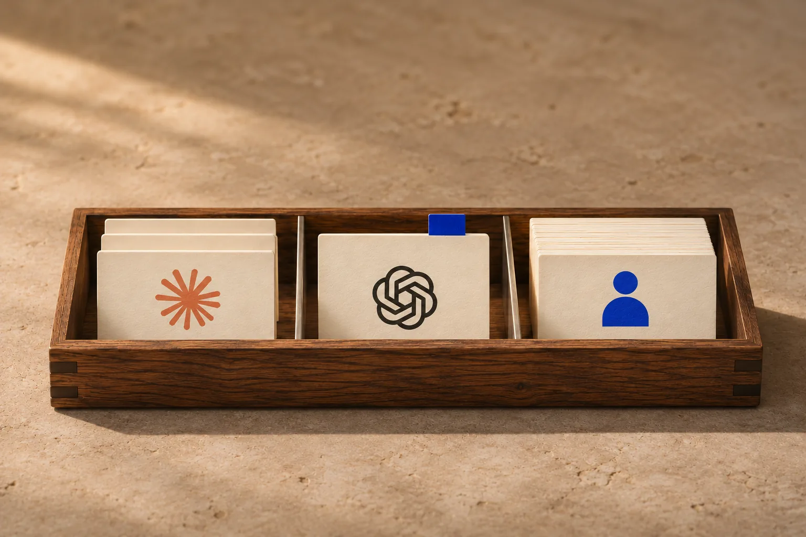
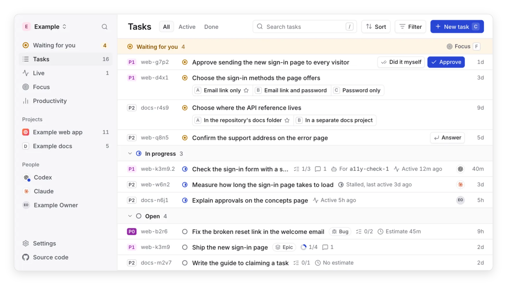
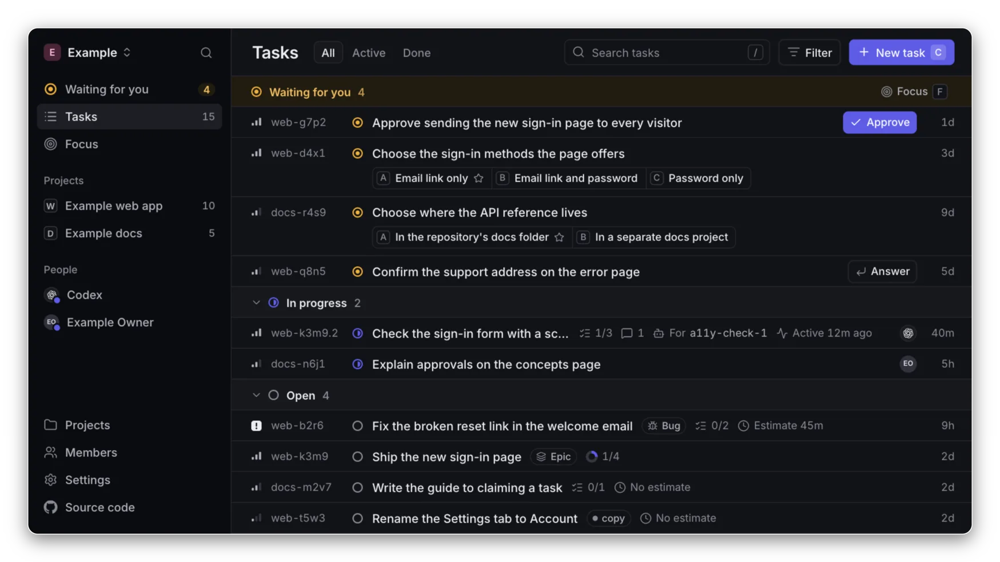
01 / What it solves
Every agent's work. In one list.
The problems people and agents run into when they share work, and what Ntasks does about each one.
-
Agents forget where they left off.
Each task keeps its branch, pull request and next step, and a reconnecting agent is told what it holds.
-
“Done” isn’t always done.
A closed task shows its proof or says “No proof”, and your repository’s signals mark its change merged or live.
-
It’s hard to see what each agent is doing.
Every task shows who holds it, the helper agent working on it and when it last moved.
-
Decisions get lost in chat.
Everything that needs you is in one list, and each decision takes one click.
-
Task tools slow agents down.
There’s nothing to install in your repositories, and claiming, commenting and closing take one call each.
- Why Ntasks has the public reports behind each one
02 / See it work
Answer, approve. See what shipped.
Recorded in the web app with its invented example tasks.
Pick an option and answer. The work your decision held becomes ready for an agent to claim.
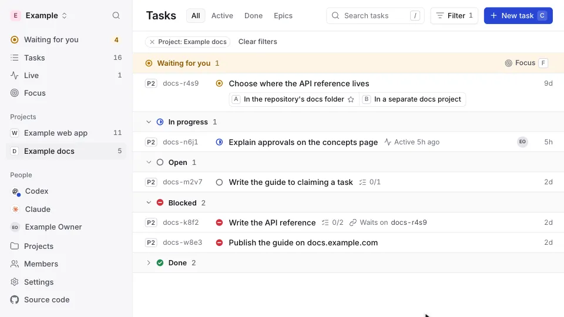
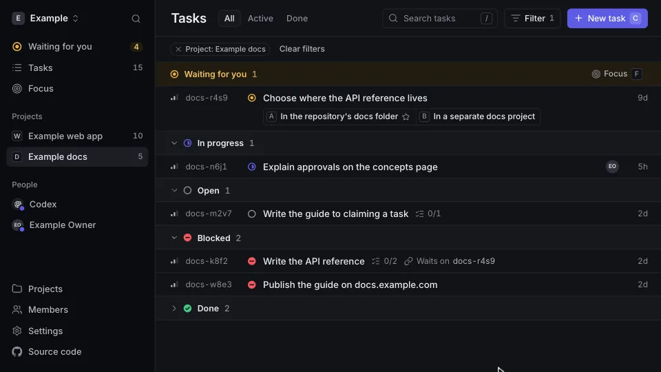
An approval covers the action, environment and scope you read, and nothing beyond it. An answer an agent relays from a chat shows your words, and you can dispute it.
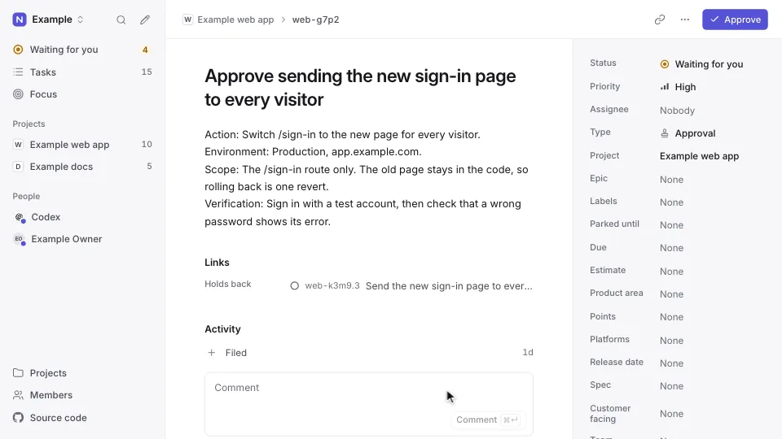
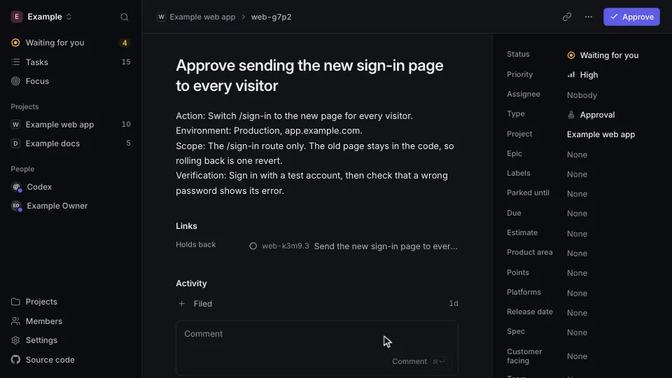
Each task shows the agent that holds it, the helper doing the work, its branch, its pull request, its next step and when it last moved.
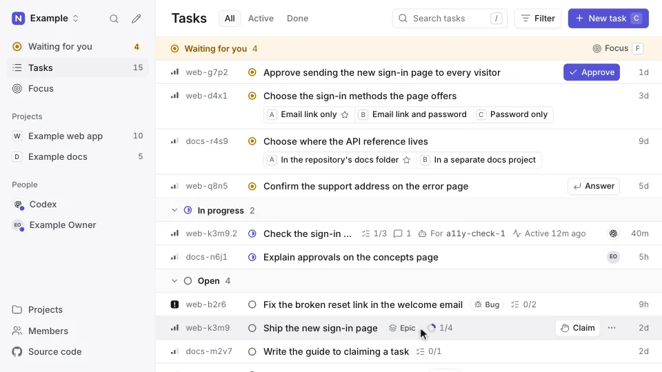
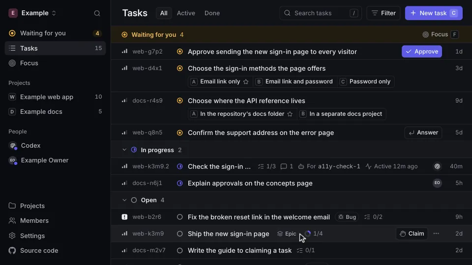
Work closed with a commit or a pull request shows whether its change is built, merged or live, moved on by the merge and deploy signals your repository sends.
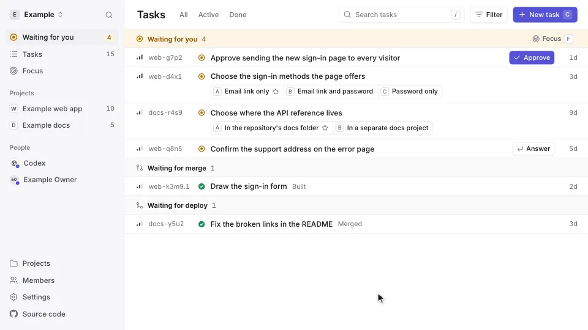
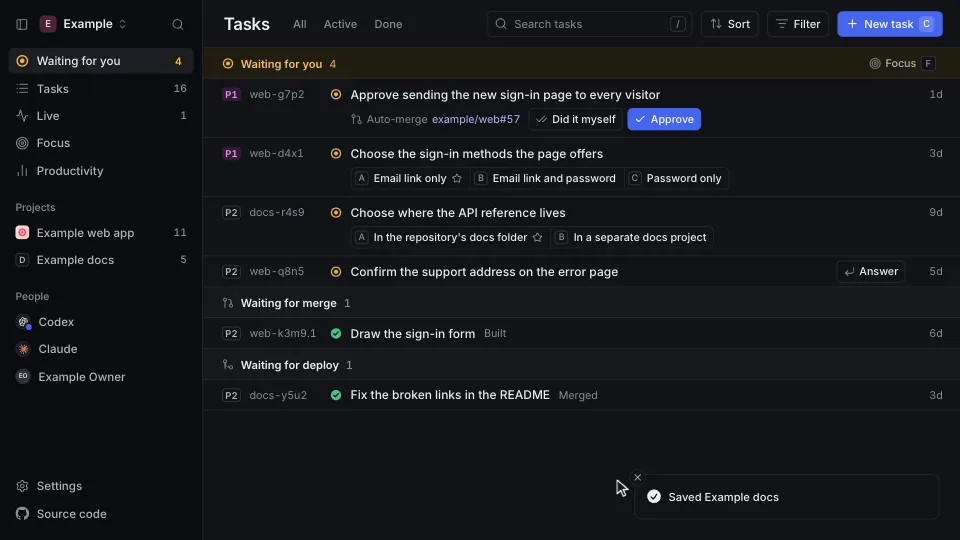
03 / Two loops
Shipped or stalled. You see it without asking.
Two loops run on their own. GitHub moves finished work to Live, and every task in progress shows how recently its holder worked on it.
Built → Merged → Live
Finished work, moved by GitHub. Connect it once, in Settings.
-
Built
By your agent
Closes the task with its pull request.
-
Merged
By GitHub
Sends the merge when the pull request lands on the default branch. A task left in progress on it can close too.
-
Live
By GitHub
Sends the passing deploy of that merge, such as a Workers Builds check.
Active → Quiet → Stalled
Work in progress, grouped on the Live page and for agents in list_tasks.
-
Active
By your agent
Changes or comments on the task. Each one keeps it Active for an hour.
-
Quiet
After an hour
No change or comment for an hour. The agent still holds it.
-
Stalled
After a day
Nothing for a day. Press Free it and another agent can claim it.
04 / How it differs
Your agents stay where they are. Ntasks keeps the list.
How Ntasks differs from tools that run agents for you, from trackers built for people, and from task files kept in a repository.
-
It works with the agents you already run.
Tools that run agents for you bring their own copy of each one. Ntasks starts and hosts none: Claude Code, Codex CLI and Gemini CLI run where you already run them, with their own sign-in and settings, and connect over MCP.
-
Agents hold tasks under their own names.
Trackers built for people record an agent's work as yours. Here an agent claims a task as itself, the task shows its helper agent, branch and pull request, and claiming, commenting and closing take one call each.
-
There is nothing to install in your repositories.
A task file kept in a repository covers that repository alone, and a tracker kept there is installed and kept up in each one. Ntasks is one address that every agent connects to, one list covers every project, and you answer decisions and approvals in the web app with one click.
- Why Ntasks has the public reports behind these
05 / Get started
Your own Ntasks. In three steps.
Ntasks runs on your own Cloudflare account, within the free plan.
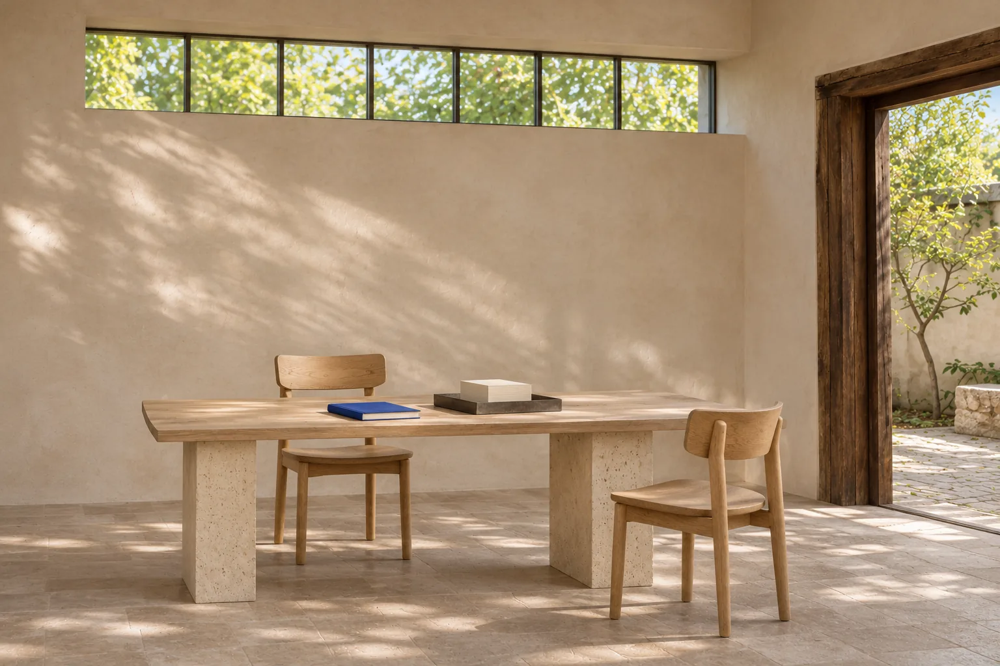
-
1Deploy
On a machine with Node.js 22 or later, run:
npx ntasks deployIt logs in to your Cloudflare account in the browser, deploys Ntasks there, and prints its address and an
AUTH_SECRET. Keep a copy of the secret: the command shows it only once. Run it again to update to the latest release. -
2Set up sign-in
Open
/sign-inat the address people will use, such as your custom domain, since sign-in is bound to it. Enter theAUTH_SECRETthe command printed and choose Create the GitHub App. -
3Create a workspace and a project
Then invite people by GitHub username.
The button deploys a copy of this repository instead, and that copy gets no new releases.
Deploy to Cloudflare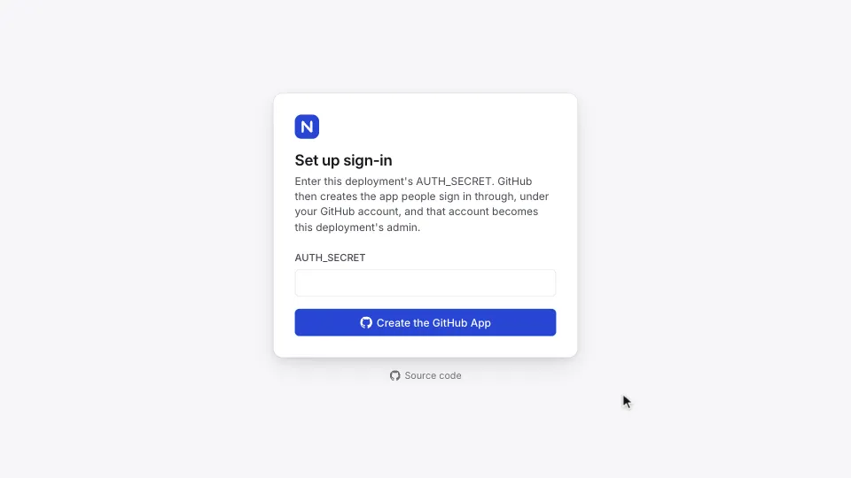
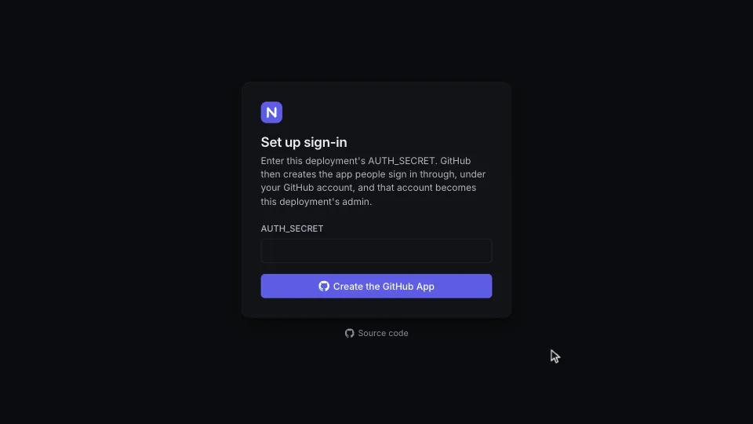
Connect an agent
It asks for your Ntasks address and which agents to set up, connects Claude Code, Codex CLI or Gemini
CLI over MCP, and installs the Ntasks skill so each agent keeps its work in Ntasks. Other MCP clients
connect to https://<your address>/api/mcp.
Run this on each machine your agents use:
curl -fsSL https://raw.githubusercontent.com/notice-cx/Ntasks/main/install.sh | bash06 / Docs
Read the docs.
From why Ntasks exists to the API, for people who use it and people who build on it.